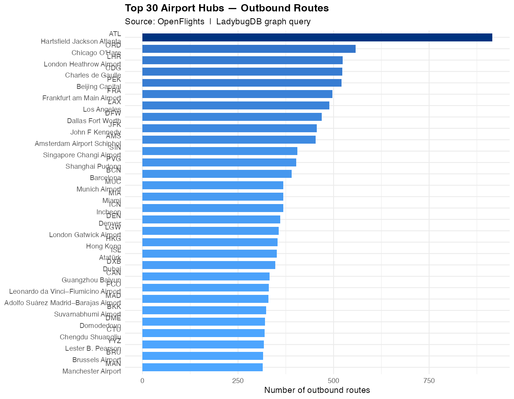
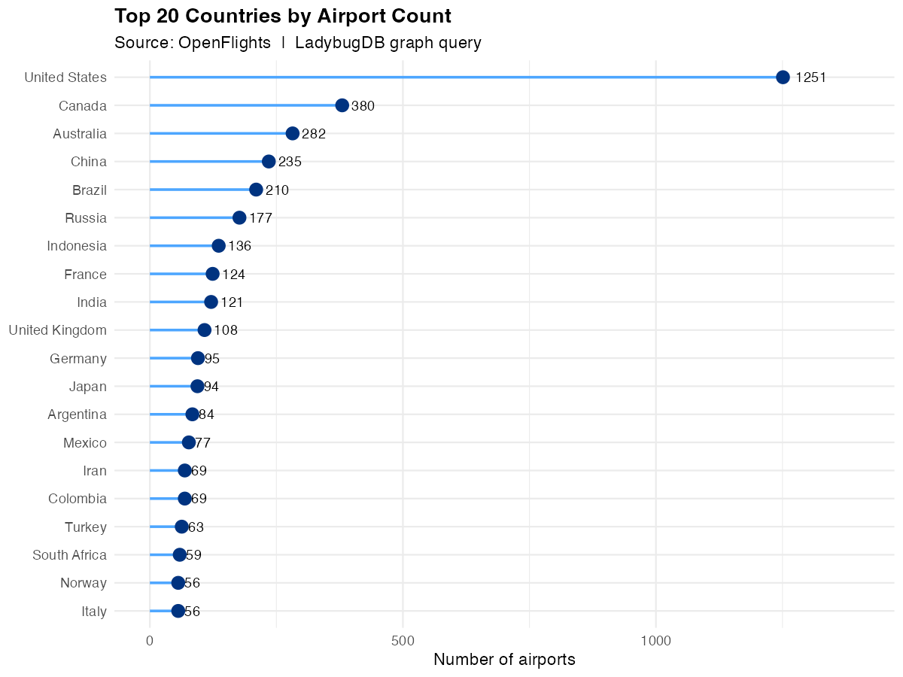
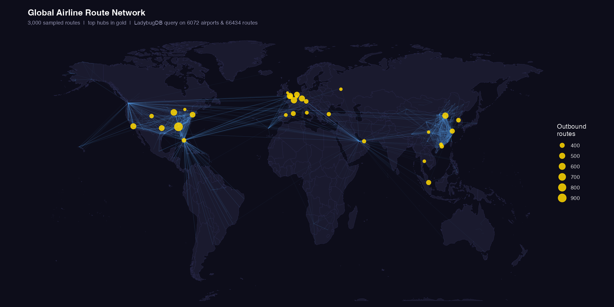
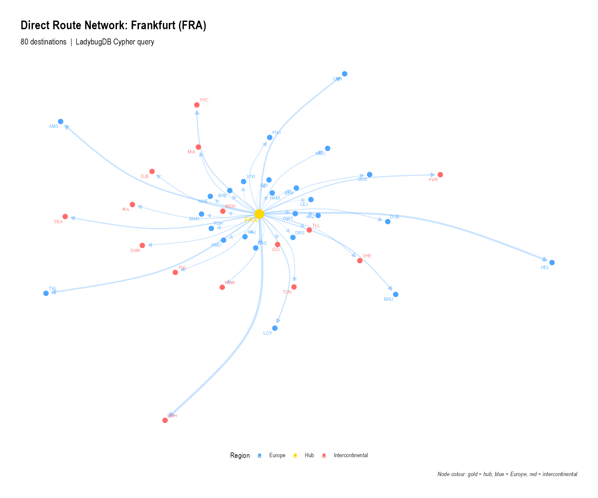

Real-world graph analysis: OpenFlights
Source:vignettes/openflights-analysis.Rmd
openflights-analysis.RmdThis article walks through a complete, real-world graph-analysis workflow using the OpenFlights dataset: ~7 700 airports and ~67 000 airline routes loaded into an in-memory LadybugDB graph.
The full script is at example_openflights.R in the
package source. The code blocks below are shown for reference
(eval = FALSE) and can be run with:
1. Download the data
OpenFlights publishes two CSV files: airports and routes. We download them to a temporary directory at the start of each session.
library(rladybugdb)
suppressPackageStartupMessages({
library(ggplot2)
library(dplyr)
})
base_url <- "https://raw.githubusercontent.com/jpatokal/openflights/master/data"
airports_file <- file.path(tempdir(), "airports.dat")
routes_file <- file.path(tempdir(), "routes.dat")
download.file(paste0(base_url, "/airports.dat"), airports_file, quiet = TRUE)
download.file(paste0(base_url, "/routes.dat"), routes_file, quiet = TRUE)2. Parse into data frames
The raw files are comma-separated with no header row. We assign column names manually and filter to real airports that have a valid IATA code and coordinates.
airports_raw <- read.csv(airports_file, header = FALSE, quote = '"',
stringsAsFactors = FALSE, na.strings = c("", "\\N"),
col.names = c("id","name","city","country","iata","icao",
"lat","lng","alt","tz","dst","tz_name","type","source"))
routes_raw <- read.csv(routes_file, header = FALSE, quote = '"',
stringsAsFactors = FALSE, na.strings = c("", "\\N"),
col.names = c("airline","airline_id","src_iata","src_id",
"dst_iata","dst_id","codeshare","stops","equipment"))
# Keep only real airports with valid coordinates and IATA codes
airports <- airports_raw |>
filter(type == "airport", nchar(iata) == 3,
!is.na(lat), !is.na(lng), !is.na(id)) |>
transmute(
id = as.integer(id),
name = name,
city = city,
country = country,
iata = iata,
lat = as.double(lat),
lng = as.double(lng),
alt = as.integer(ifelse(is.na(alt), 0L, as.integer(alt)))
)
# Keep routes where both endpoints reference known airports
known_ids <- airports$id
routes <- routes_raw |>
filter(!is.na(src_id), !is.na(dst_id),
suppressWarnings(!is.na(as.integer(src_id))),
suppressWarnings(!is.na(as.integer(dst_id)))) |>
transmute(
src_id = as.integer(src_id),
dst_id = as.integer(dst_id),
airline = ifelse(is.na(airline), "Unknown", airline),
stops = as.integer(ifelse(is.na(stops), 0L, stops))
) |>
filter(src_id %in% known_ids, dst_id %in% known_ids, src_id != dst_id)After filtering we have roughly 6 200 airports and 63 000 routes.
3. Load into LadybugDB
We model airports as nodes and routes as directed edges. The graph
schema uses one node table (Airport) and one relationship
table (Route).
db <- lb_database(":memory:")
conn <- lb_connection(db)
lb_execute(conn, "
CREATE NODE TABLE Airport (
id INT64,
name STRING,
city STRING,
country STRING,
iata STRING,
lat DOUBLE,
lng DOUBLE,
alt INT64,
PRIMARY KEY(id)
)")
lb_execute(conn, "
CREATE REL TABLE Route (
FROM Airport TO Airport,
airline STRING,
stops INT64
)")lb_copy_from_df() uses LadybugDB’s native bulk loader,
which is orders of magnitude faster than row-by-row CREATE
statements:
lb_copy_from_df(conn, airports, "Airport")
lb_copy_from_df(conn, routes, "Route")5. Top airport hubs
Which airports have the most outbound routes? We aggregate with
count(), filter to airports with more than 10 routes, and
take the top 30:
top_hubs <- lb_query(conn, "
MATCH (a:Airport)-[r:Route]->()
WITH a.iata AS iata, a.name AS name, a.country AS country,
a.lat AS lat, a.lng AS lng, count(r) AS routes
WHERE routes > 10
RETURN iata, name, country, lat, lng, routes
ORDER BY routes DESC
LIMIT 30")
p1 <- top_hubs |>
mutate(label = paste0(iata, "\n", sub(" International.*", "", name))) |>
ggplot(aes(x = reorder(label, routes), y = routes, fill = routes)) +
geom_col(width = 0.7) +
scale_fill_gradient(low = "#4da6ff", high = "#003380", guide = "none") +
coord_flip() +
labs(title = "Top 30 Airport Hubs — Outbound Routes",
subtitle = "Source: OpenFlights | LadybugDB graph query",
x = NULL, y = "Number of outbound routes") +
theme_minimal(base_size = 11) +
theme(plot.title = element_text(face = "bold"))
Frankfurt (FRA), London Heathrow (LHR), and Charles de Gaulle (CDG) dominate the top of the list, reflecting their role as major intercontinental connecting hubs.
6. Countries with the most airports
by_country <- lb_query(conn, "
MATCH (a:Airport)
WITH a.country AS country, count(a) AS n_airports
RETURN country, n_airports
ORDER BY n_airports DESC
LIMIT 20")
The United States leads by a wide margin, followed by Russia and Canada — a reflection of large geographic size with many regional airports.
7. World map of airline routes
To produce the world map we sample 3 000 route segments and overlay the top hub locations:
route_map <- lb_query(conn, "
MATCH (src:Airport)-[r:Route]->(dst:Airport)
WHERE src.lng IS NOT NULL AND dst.lng IS NOT NULL
RETURN src.lat AS src_lat, src.lng AS src_lng,
dst.lat AS dst_lat, dst.lng AS dst_lng,
src.country AS country
LIMIT 3000")
The density of routes across the North Atlantic and within North America and Europe is immediately visible. The relative scarcity of routes across the South Pacific is also striking.
8. Frankfurt hub network
We extract the one-hop neighbourhood of Frankfurt (FRA) — all
airports reachable by a direct Lufthansa or partner flight — and
visualise it as a network graph using ggraph:
hub_net <- lb_query(conn, "
MATCH (src:Airport {iata: 'FRA'})-[r:Route]->(dst:Airport)
RETURN src.iata AS src, dst.iata AS dst,
dst.name AS dst_name, dst.country AS dst_country,
dst.lat AS dst_lat, dst.lng AS dst_lng,
r.airline AS airline
LIMIT 80")
library(igraph)
library(ggraph)
vertices <- data.frame(
name = unique(c("FRA", hub_net$dst)),
country = c("Germany",
hub_net$dst_country[match(unique(hub_net$dst), hub_net$dst)]),
stringsAsFactors = FALSE
)
europe <- c("Germany","France","United Kingdom","Spain","Italy","Netherlands",
"Switzerland","Austria","Belgium","Poland","Sweden","Norway",
"Denmark","Finland","Portugal","Greece","Czech Republic","Romania",
"Hungary","Ireland","Croatia","Slovakia","Bulgaria","Serbia")
edges_ig <- hub_net |> count(src, dst, name = "weight")
g <- graph_from_data_frame(edges_ig, directed = TRUE, vertices = vertices)
V(g)$region <- ifelse(V(g)$name == "FRA", "Hub",
ifelse(V(g)$country %in% europe, "Europe", "Intercontinental"))
Gold = Frankfurt hub, blue = European destinations, red = intercontinental destinations. The hub-and-spoke structure is clearly visible.